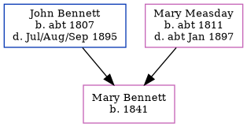

Mary Bennett 1841 -
[ Home ] | [ Calendar ] | [ Surnames Index ] | [ Census Index ] | [ Family History ]The child of John Bennett (an agricultural laborer) and Mary Measday, Mary Bennett, the three times great-aunt of Nigel Horne, was born in Preston, Kent, England in 18411,2.
During her life, she was living at her birthplace in 18511; and at Fourturnings in Preston on Mar 30, 18513.
Parents
- John was born c. 1807
- Mary was born c. 1811
Citations
- 1851 England Census Online publication - Provo, UT, USA: The Generations Network, Inc., 2005.Original data - Census Returns of England and Wales, 1851. Kew, Surrey, England: The National Archives of the UK (TNA): Public Record Office (PRO), 1851. Data imaged from the National
- England & Wales, FreeBMD Birth Index, 1837-1915 Online publication - Provo, UT, USA: The Generations Network, Inc., 2006.Original data - General Register Office. England and Wales Civil Registration Indexes. London, England: General Register Office. © Crown copyright. Published by permission of the Cont
- 1851 England, Wales & Scotland Census - Findmypast (was age 9 and the daughter of the head of the household)
Family Tree
Generated by ged2site. Last updated on Jun 11, 2024